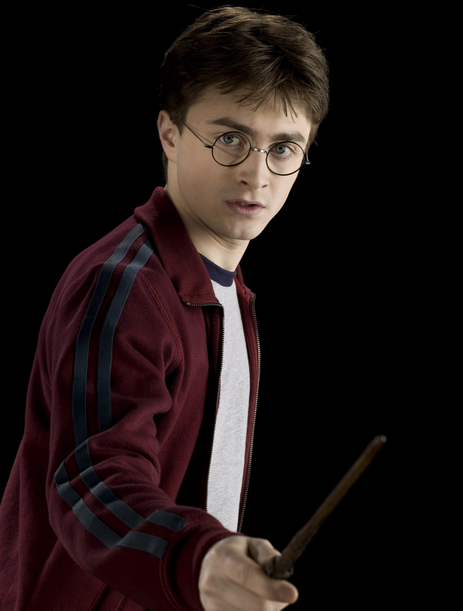

|
|
|
Harry Potter Harry James Potter (n. el 31 de julio de 1980), es un mago de sangre mestiza y el único hijo de James y Lily Potter. Es la única persona conocida que ha sobrevivido a la maldición de Avada Kedavra, haciéndolo en dos ocasiones. Ambas veces la maldición fue conjurada por Lord Voldemort. La primera, en un intento de matar a Harry durante su etapa de bebé, conlleva a la primera derrota de Voldemort y al final de la Primera Guerra Mágica. La segunda, (en la que a diferencia de la primera Voldemort logra matarlo efectivamente pero luego el niño revive) destruye una parte más del alma de Voldemort y lleva a su destrucción definitiva y al final de la Segunda Guerra Mágica. Luego de su primer intento de asesinato y la muerte de sus padres, Harry es acogido por sus tíos, los Dursley. A la edad de once años, Harry descubre que es un mago. Comienza a asistir a Hogwarts y es seleccionado en la Casa de Gryffindor. Se convierte en el mejor amigo de Ron Weasley y Hermione Granger y en el jugador de Quidditch más joven en más de un siglo. Se hace aún más conocido en sus primeros años tras proteger la piedra filosofal de Voldemort y salvar a Ginny Weasley de la Cámara de los Secretos. En su cuarto año, Harry gana el Torneo de los Tres Magos, aunque la competencia termina en tragedia con la muerte de Cedric Diggory y el regreso de Lord Voldemort. En el siguiente año escolar, Harry funda el Ejército de Dumbledore y lucha en la Batalla del Departamento de Misterios, durante la cual pierde a su padrino, que era como un padre para él. Harry juega un papel importante en muchas otras batallas de la Segunda Guerra Mágica. Durante la Batalla de Hogwarts, se encuentra con Voldemort y se sacrifica a sí mismo, sin embargo, no muere, sino que se bate en duelo contra Voldemort por última vez, y lo derrota. Después de la guerra, Harry se convierte en auror y se casa con Ginny Weasley, con quien tuvo tres hijos: James Sirius, Albus Severus y Lily Luna. Harry también es nombrado padrino de Teddy Remus Lupin. Harry es también notable por ser el único Señor de la Muerte que se conoce, después de haber unido las tres Reliquias de la muerte. Paradójicamente es pariente de Lord Voldemort, al ser este descendiente de Cadmus Peverell y Harry descendiente de Ignotus Peverell. Según un epílogo alternativo que filtraron escrito por J.K. Rowling, Harry tiene 150 años y es director de Hogwarts y tiene un tataranieto llamado Tom, como Tom Ryddle (Podría ser que se llamara Tom Potter). |
| Hecho por Antonio Jesús Luque Parlón (Todos los derechos reservados por COPYRIGHT) |